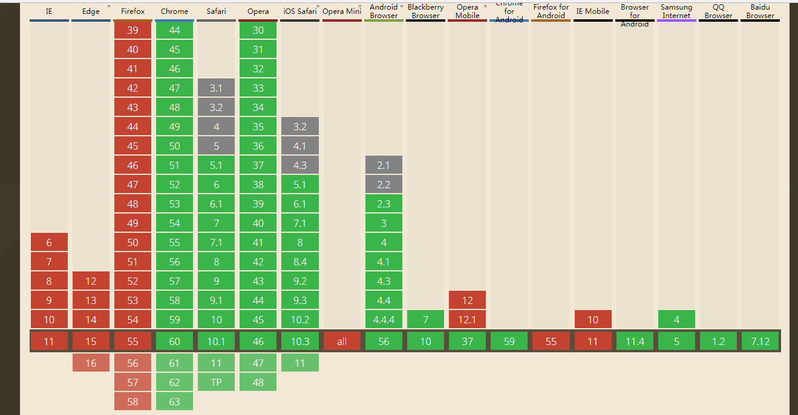

概述
近期有个移动端页面的项目，存在需要用户输入的表单信息。因为页面不存在滑动（通过overflow设为hidden的方式），所以在点击input标签输入信息时，在安卓机下键盘会遮挡页面底部内容，当点击键盘时，焦点所在的 input标签才会显示在视区里。在IOS不存在此问题（在软键盘弹出时，页面会自动顶上去），存在滑动的页面里也不存在该问题。
目前的解决方案一览
- 通过
window.onresize监听页面大小变化，然后通过window.scrollTo使页面滚动到所需位置 - 通过
Element.scrollIntoView() - 通过
Element.scrollIntoViewIfNeeded()
window.scrollTo
没什么好解释的上代码
|
|
提一下，因为iphone不存在此问题，可以加一个限制条件在android以外的终端下不执行此端代码
|
|
提个问题，如果这段代码放在放在 input 等输入标签内可以么？
经过个人测试不可以，大家有兴趣可以自行测试，如果有可以的机型可以拿出来探讨。
对这个问题我还想分析下，首先我的页面是不可滚动的，正常情况执行 window.scrollTo 是不会有作用的，但是当弹出软键盘时，页面由于被软键盘顶起，致使页面高度发生了变化，所以此时执行 window.scrollTo 页面会发生变化。但是，由于js触发事件，onresize 事件要在 click 事件之后，不是捕获和冒泡的问题哦。我尝试添加setTimeout，但是这个事件差不同的机型间会存在差异，如果设太长，就又失去了该解决方案的意义了，关于这个见仁见智吧。
关于此段，持续更新，欢迎交流学习
Element.scrollIntoView()
在MDN中有提到这个是一个实验功能，但他的支持度还是可以的，根据项目情况选择吧。

其作用就是让当前的元素滚动到浏览器窗口的可视区域内
使用方式如下
element.scrollIntoView(); // 等同于element.scrollIntoView(true)
element.scrollIntoView(alignToTop); // Boolean型参数
element.scrollIntoView(scrollIntoViewOptions); // Object型参数
参数分两种
alignToTop
一个Boolean值：
- 如果为true，元素的顶端将和其所在滚动区的可视区域的顶端对齐。
- 如果为true，元素的顶端将和其所在滚动区的可视区域的顶端对齐。
- 如果为false，元素的底端将和其所在滚动区的可视区域的底端对齐。
scrollIntoViewOptions
一个boolean或一个带有选项的object：
|
|
如果是一个boolean, true 相当于{block: “start”}，false 相当于{block: “end”}
scrollIntoViewOptions 支持度很低， 不建议使用
Element.scrollIntoViewIfNeeded()
在MDN中有提到：
该特性是非标准的，请尽量不要在生产环境中使用它！
但他的支持度还是蛮高的的，根据项目情况选择吧。

用法类似与 Element.scrollIntoView() ，但它只有一个参数
opt_center
一个 Boolean 类型的值，默认为true:
- 如果为true，则元素将在其所在滚动区的可视区域中居中对其。
- 如果为false，则元素将与其所在滚动区的可视区域最近的边缘对齐。 根据可见区域最靠近元素的哪个边缘，元素的顶部将与可见区域的顶部边缘对准，或者元素的底部边缘将与可见区域的底部边缘对准。
欢迎留言交流，如需转载请注明出处